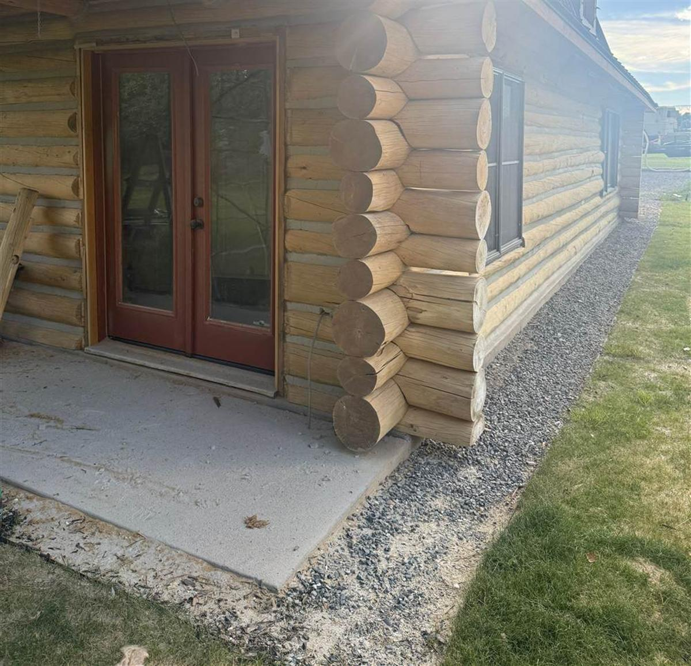

Stain doesn't fail all at once. It fades quietly, season by season, until one day the logs underneath are taking every storm bare. By the time most owners notice, the finish has been done protecting the wood for a year or more. Here are the signs we look for on log home staining assessments across Sun Valley, Ketchum, and Hailey — so you can catch it while it's still a maintenance job.

The four signs your stain is failing
1. The color has gone gray or silver
Graying is ultraviolet damage to the wood fibers themselves. It means the UV blockers in your stain are used up and sunlight is now breaking down the log surface directly. A little silvering on the sunniest wall is an early warning; widespread gray means the finish is gone.
2. Chalky residue when you rub the wood
Run your hand across the logs. If your palm comes away with a fine, pale powder, the stain's binders are breaking down and the finish is literally turning to dust. Chalking is one of the most reliable signs a re-stain is due — no ladder required to check it.
3. Blotchy, uneven color
When some sections hold color and others fade, the film is failing unevenly — usually where sun, snow splashback, or roof runoff hit hardest. Blotchiness means water is already penetrating the faded areas while the rest of the wall holds.
4. Water soaks in instead of beading
This is the test that settles it. Flick water at the logs. On a healthy finish it beads and rolls off. If it darkens the wood and soaks in flat, the water repellency is gone — and every rain and snowmelt after that is going into the logs.
Why south- and west-facing walls fail first
At the Wood River Valley's elevation, UV exposure is significantly more intense than at sea level. South- and west-facing walls take the full force of it, plus the biggest daily temperature swings. We routinely see homes where the south wall needs a full re-stain while the shaded north wall has years of life left. That's also why a good assessment prices walls individually instead of quoting a blanket re-do — you shouldn't pay to re-stain wood that's still protected.
What happens if you wait
Bare wood doesn't stay bare — it absorbs. Moisture cycles in and out with every freeze and thaw, opening surface checks wider each winter. Left long enough, that path leads to soft spots, rot, and log restoration work that costs many multiples of a re-stain. The economics of log home ownership are simple: finish maintenance is cheap, wood repair is not.
The re-staining cadence that works in Idaho
In our climate, plan on a stain inspection every 3–5 years and a re-treatment somewhere in the 5–8 year range, depending on the product and your exposure. If your home is coming up on that window — or it's already showing any of the four signs above — fall is the right time to get it assessed, before the snow flies.
Chase Construction re-stains and re-chinks log homes across Sun Valley, Ketchum, Hailey, and Bellevue. Call 208-897-8100 for an honest read on what your finish needs — and what it doesn't.